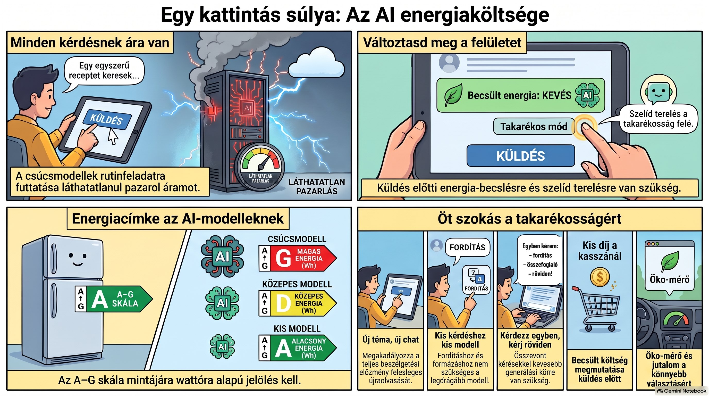
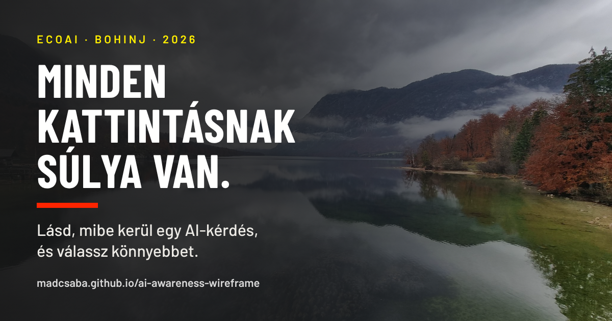
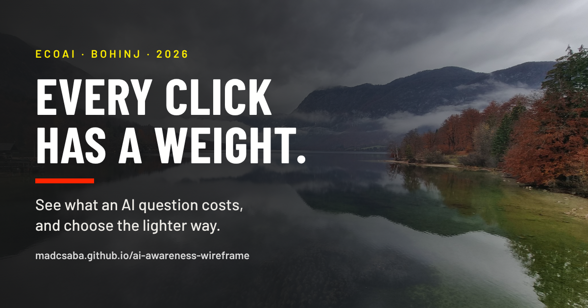

Hallgasd, nézd, mutasd be
A projekt 2026. november 10-én született, a bohinji Node AI Summiton. Itt találod a róla készült podcastot, infografikát, előadásokat és háttércikket, és mindent, amivel továbbadhatod.
🎧 Podcast: Mennyi áramot zabál egyetlen AI-kérdés?
Rövid, kétszereplős beszélgetés a láthatatlan energiaköltségről, kb. 2 perc.
🖼️ Infografika: Egy kattintás súlya
Az AI energiaköltsége négy képben: a láthatatlan pazarlás, a jobb felület, az energiacímke és öt takarékos szokás.

🎤 Előadások
Két diasor, mindkettő magyarul és angolul. Böngészőben lapozhatók, PDF-be és PowerPointba is exportálhatók.
📄 Háttércikk
Részletes, forrásokkal ellátott cikk az egész problémakörről: számok, a láthatatlanság pszichológiája, szabványok, történelmi párhuzamok, ellenvetések és kérdések egy beszélgetéshez. Ebből készült a podcast is.
Egy kattintás súlya – az AI láthatatlan energiaköltségérőlMagyar nyelvű cikk, PDF-be, Wordbe és Markdownba is exportálható.📣 Oszd meg
Megosztókép Facebookra és más közösségi oldalakra (1200×630 px).



Kapcsolat: tech@ahang.hu · GitHub · Vissza a főoldalra
Listen, look, present
The project was born on 10 November 2026 at the Node AI Summit in Bohinj. Here is the podcast, the infographic, the talks and the background article, and everything you need to pass it on.
🎧 Podcast: The Hidden Energy Cost of AI Prompts
A two-voice conversation about the invisible energy cost of AI, about 21 minutes.
🖼️ Infographic: The Weight of a Click
Energy-conscious AI at a glance: matching models to tasks, five habits for lighter AI use, and real-world eco-labelling parallels.

🎤 Talks
Two slide decks, each in English and Hungarian. Browse them in the browser, or export to PDF or PowerPoint.
📄 Background article
An in-depth, sourced article on the whole topic: the numbers, why the cost is invisible, standards, historical parallels, objections and questions for a conversation. The podcast was made from it.
Egy kattintás súlya – az AI láthatatlan energiaköltségérőlIn Hungarian; exports to PDF, Word or Markdown. The English podcast covers the same ground.📣 Share it
A share image for Facebook and other social networks (1200×630 px).

Contact: tech@ahang.hu · GitHub · Back to the home page